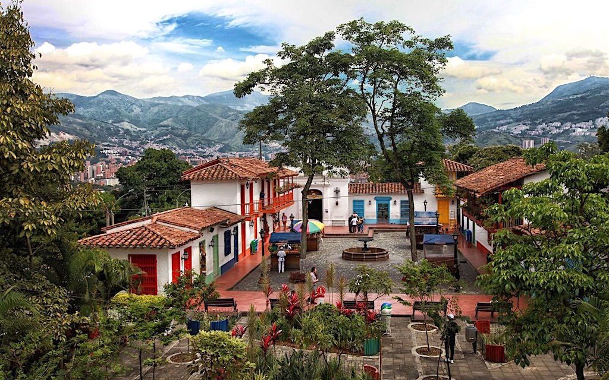

| Museo El Castillo |
El museo posee una importante colección de obras de artistas colombianos y europeos,
mobiliario de finales del siglo XIX y principios XX, así como cristalería de Baccarat,
vajillas y porcelanas europeas, además de trabajos de maestros colombianos en cerámica,
pintura, escultura. La colección está distribuida en varias salas, entre las que destacan el Anticuario. |

|
| Pueblito Paisa |
El Pueblito Paisa es una réplica de un típico pueblo antioqueño del siglo XX,. Está ubicado en la cima del cerro Nutibara,
entre el Aeroparque Olaya Herrera y elrío Medellín. Puedes llegar en automóvil, pues hay estacionamiento para parquear; o caminando.
por los senderos destinados para tal fin; el acceso es gratuito. |

|
| Jardín Botánico de Medellín |
Uno de los lugares turísticos en Medellín más emblemáticos para los amantes de la naturaleza es el Jardín Botánico Joaquín Antonio Uribe.
Está ubicado muy cerca de la estación Universidad del metro, en la Zona Norte de la ciudad, donde también encontrarás otros espacios de interés
como el Museo Universitario, el Museo Cementerio de San Pedro, el Planetario Municipal, la Casa de la Música y varios parques. |
|